AnimazeでReady Player Meを使用する方法
AnimazeがReady Player Meに対応してワクワクしています。Animazeを使えば、Ready Player Meキャラクターとして配信やビデオチャットが行えます。ただし、Animazeは.avatarファイルしか対応していないため、Animazeアプリにモデルをインポートする前に、AnimazeエディターでReady Player Meのファイルを.avatarファイルに変換する必要があります。これから、その手順を一つずつ説明します。Animaze内に自分のモデルがインポートできたら、やって良かったと思えるでしょう！
-
アバターを作成
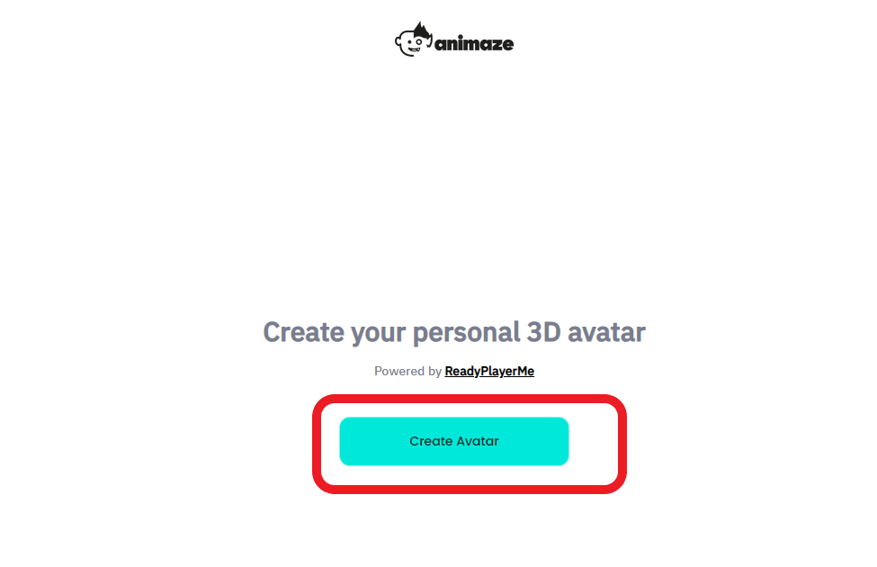 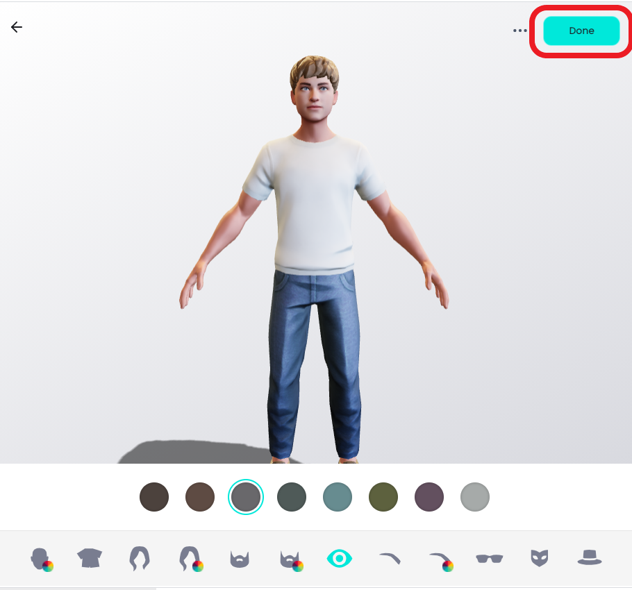
-
ブラウザに表示されたリンクをコピー＆ペーストして、Ready Player Meアバターをダウンロードしてください。自分のアバターの名前と保存場所を記憶しておくことが重要です。それらの情報は手順5で使用します。
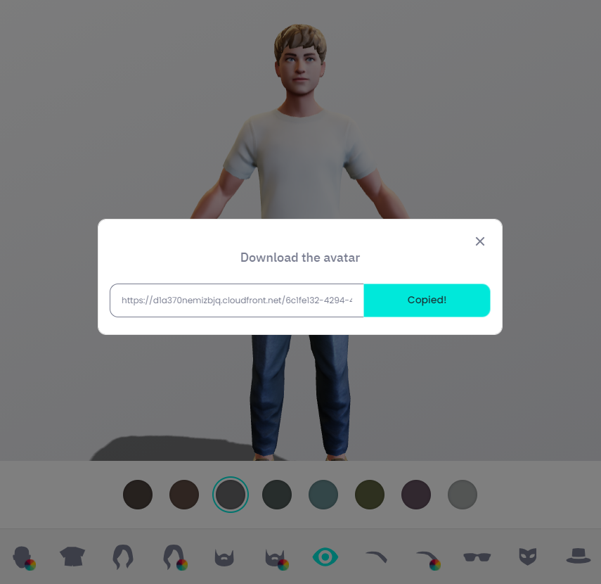
-
Animazeエディターを開きます（Animazeエディターは、ライブラリのツール内にあります）
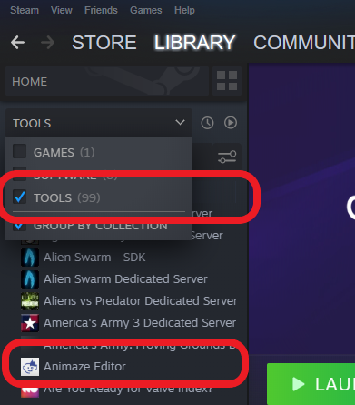
-
Animazeエディターを開いたら、アセット > 3Dオブジェクトをインポートの順にクリックします
自分のReady Player Meアバターを選択してください。（通常、ダウンロードファイル内の名前です。）
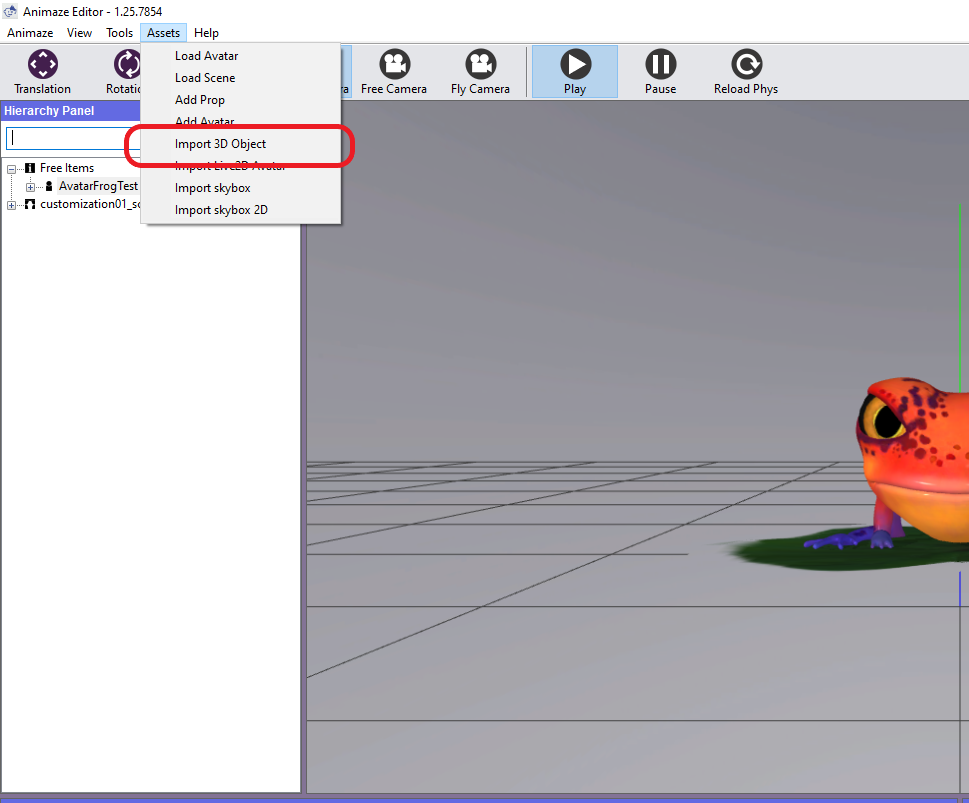
- 「インポート」を押します。インポートプロセスには時間がかかることがあります。その場合、「お待ちください」の横に（反応なし）が表示されることがあります。落ち着いて、アバターが読み込まれるのを待ってください！読み込みが終了したら、インポートログが現れます。OKをクリックします。
注意エクスポートする前に、この段階でアバターのプロパティ（アバターの肌の輝きなど）をさらに編集することが可能です。以下をご覧ください。
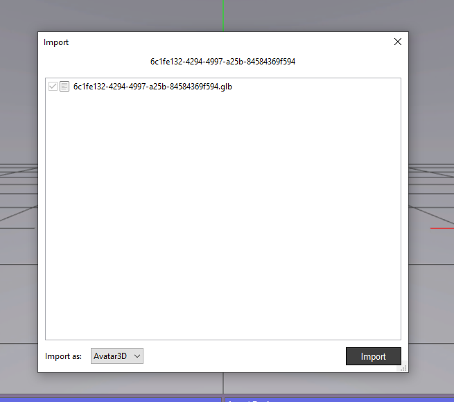 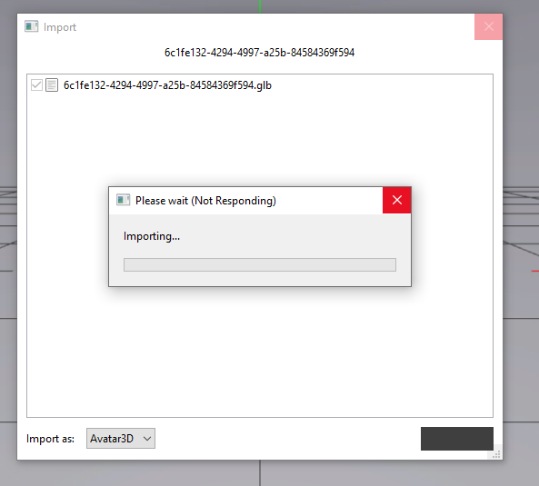 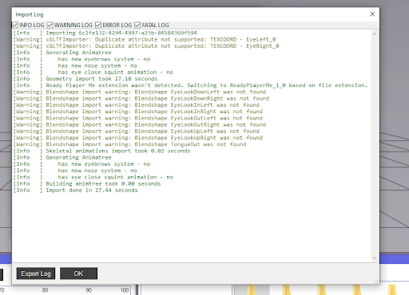
-
Ready Player Meを.avatarファイルとしてエクスポートする。階層パネル内のアイテムを右クリックし、バンドルを選択します。これにより、Animazeアプリに追加するための.avatarファイルが作成されます。バンドルの保存先を覚えておきましょう。次の手順で必要になります。
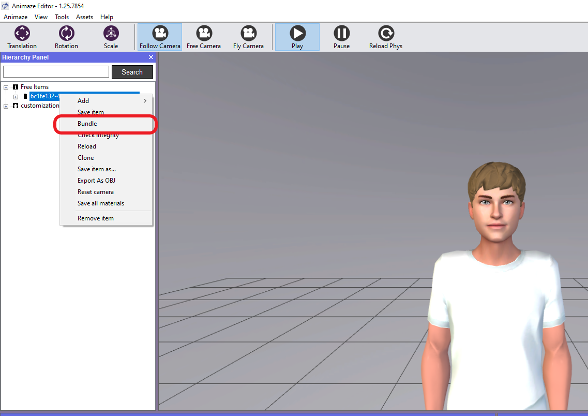
-
Animazeデスクトップアプリを開きます（Animazeエディターは、ライブラリのソフトウェア内にあります）
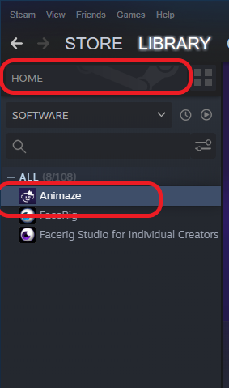
- アバターギャラリーのインポートタブを開きます。RPMアバターの.avatarバンドルのインポートを選択します
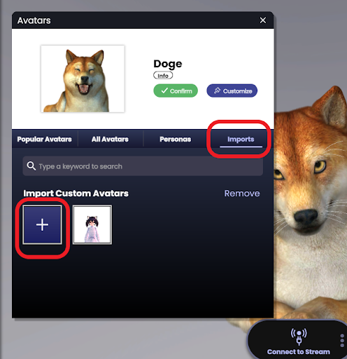
これで終了です！！
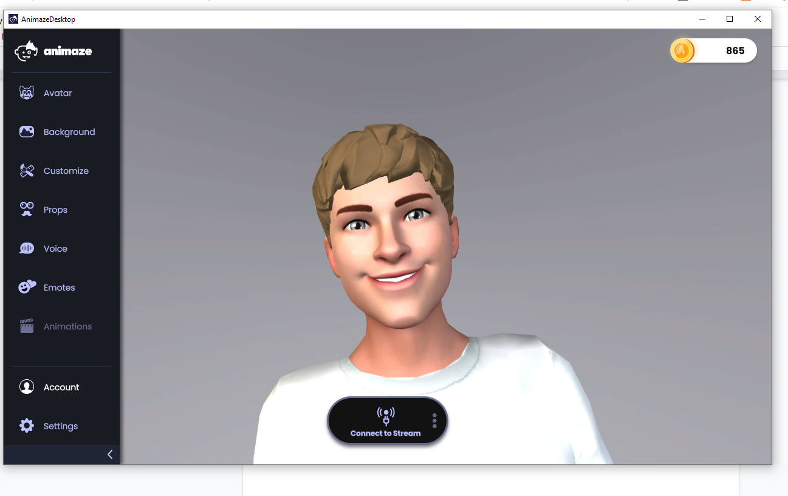
プロのヒント：AnimazeエディターやAnimazeアプリのテクスチャーの変更機能で、いつでもReady Player Meアバターを編集することができます。テクスチャーの変更ツールの詳細は、この特集記事で！
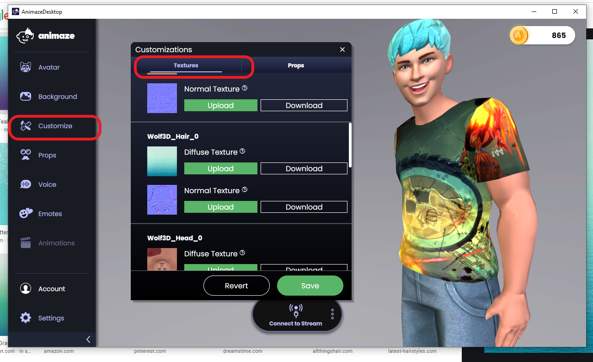
配信の設定方法については、この特集記事で！